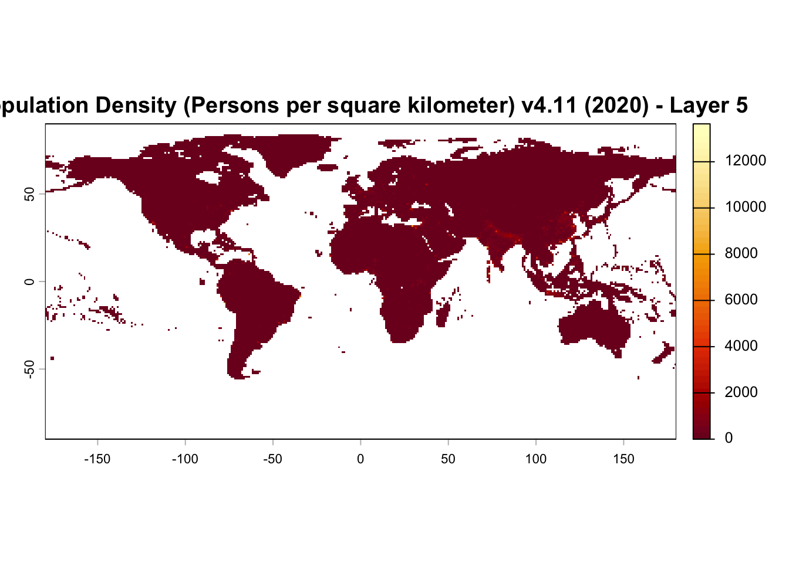

# Set the workspace to the current working directory
# Uncomment and replace the path below with your own working directory if needed:
#setwd("your_path")
workspace <- getwd() # Get the current working directory and store it in 'workspace'
# Increase the plot size by adjusting the options for plot dimensions in the notebook output
options(repr.plot.width = 16, repr.plot.height = 8) # Sets width to 16 and height to 8 for larger plots
Converting Rasters from NetCDF file (.nc) to GeoTIFF (.tif) Format
Author details: Xiang Zhao
Editor details: Dr Ryan Newis
Contact details: support@ecocommons.org.au
Copyright statement: This script is the product of the EcoCommons platform. Please refer to the EcoCommons website for more details: https://www.ecocommons.org.au/
Date: March 2026
Script and Data Information
This notebook provides a simple, reproducible example of converting a NetCDF file (.nc) to a GeoTIFF raster format using the terra package in R. It is intended as a lightweight template that can be adapted to other NetCDF-based spatial datasets and workflows.
Other file formats of this notebook
| Notebook | Files | Open in Colab / ARDC Jupyter | DOI |
|---|---|---|---|
| NetCDF to GeoTIFF |   |
Introduction
NetCDF (Network Common Data Form) is a file format designed for storing multidimensional scientific data. It is widely used for environmental datasets containing variables such as temperature, humidity, pressure, wind speed, and wind direction. These variables are typically organised across multiple dimensions—most commonly time, latitude, and longitude—allowing the data to represent changes across both space and time.
Although format conversion is often considered a routine technical step, preserving spatial metadata during this process is critical. Changes to key properties such as the coordinate reference system (CRS), spatial extent, or grid resolution can introduce subtle spatial misalignment. These issues may not be immediately visible but can propagate through analyses and potentially affect modelling results.
This notebook demonstrates a structured and transparent workflow for converting raster data between formats while explicitly verifying that essential spatial properties—including CRS, extent, and resolution—are preserved. By incorporating validation steps into the workflow, the notebook promotes reproducibility and helps safeguard the integrity of spatial datasets used in downstream analyses.
Key Concepts
K.1 NetCDF data formats
NetCDF (Network Common Data Form) is a widely used format for storing multidimensional scientific data. Environmental datasets such as temperature, humidity, pressure, wind speed, and population density are often distributed in NetCDF format because it supports multiple variables and dimensions (e.g. time, latitude, longitude) within a single file.
K.2 Raster data handling in R with terra
The terra package provides a modern framework for reading, manipulating, and writing raster data in R. It supports a wide range of raster formats and is designed for performance, clarity, and reproducibility.
K.3 Converting between raster formats
Converting raster data between formats (e.g. NetCDF→ GeoTIFF) is a common preprocessing step that enables compatibility with modern analysis tools. A robust conversion workflow should ensure that key spatial properties including CRS, extent, and resolution are preserved.
Notebook Objectives
- Demonstrate how to read a NetCDF file (.nc) into R as a SpatRaster using the terra package.
- Perform a basic visual inspection (plot) to confirm that the raster has been loaded correctly.
- Export the raster to a widely used geospatial format (.tif) while preserving the original file naming.
- Verify that key spatial metadata—including CRS, extent, and resolution—are preserved during the conversion process.
Workflow Overview
This notebook follows a simple, linear workflow to convert a NetCDF grid to a GeoTIFF format via the steps below:
- Step 1: Set up the R environment and load the required package (
terra). - Step 2: Define and validate the file path to the input NetCDF file (.nc).
- Step 3: Read the NetCDF file into R as a SpatRaster object and confirm that a valid CRS is defined.
- Step 4: Perform a quick visual check by plotting the raster to confirm it was read correctly.
- Step 5: Write the raster to disk as a GeoTIFF (.tif) file, preserving the original file name and providing a transparent output location.
- Step 6: Validate that CRS, spatial extent, and resolution are preserved after conversion.
In the near future, this material may form part of comprehensive support materials available to EcoCommons users. If you have any corrections or suggestions to improve the efficiency, please contact the EcoCommons team.

Step 1. Install and load required packages
Save the Quarto Markdown file (.QMD) to a folder of your choice, and then set the path to your folder as your working directory.
Install and load R packages and libraries that are not present in the work environment. For this notebook, we only require the terra package for the NetCDF file (.nc) to GeoTIFF (.tif) conversion and googledrive to download the example NetCDF file.
# Install and load required packages (if not already installed)
required_packages <- c(
"terra",
"googledrive"
)
for (pkg in required_packages) {
# Install if missing
if (!pkg %in% installed.packages()[, "Package"]) {
install.packages(pkg)
cat("Package installed successfully:", pkg, "\n")
}
# Load quietly
suppressPackageStartupMessages(
library(pkg, character.only = TRUE)
)
cat("Package loaded successfully:", pkg, "\n")
}Package loaded successfully: terra
Package loaded successfully: googledrive Step 2. Define the path to the input NetCDF file
We have provided an example NetCDF grid (.nc) for this notebook via OPTION 2 – Google Drive. If you would like to use your own NetCDF, choose OPTION 1, commenting out this line:
netcdf_file <- NULL
and uncomment this line with your updated path:
netcdf``_file <- "/path_to_your_file"
The example NetCDF is an continuous annual mean temperature layer, using Australia as the boundary. The original data was obtained from https://www.worldclim.org/data/worldclim21.html
Note: The input NetCDF raster must have a valid Coordinate Reference System (CRS) defined. If the NetCDF file does not contain CRS information (or does not have an accompanying .prj and/or .xml file), the conversion will stop.
# OPTION 1: Use a user-defined local NetCDF file
netcdf_file <- NULL
# Example:
# netcdf_file <- "/path/to/your/netcdf_file.nc"
# OPTION 2: Download an example NetCDF dataset if no local file is provided
if (is.null(netcdf_file)) {
# Google Drive file ID
zip_file_id <- "1Ek4Ag011oJQKnIZif2RLobCQXqet4pLH"
# Convert file ID to a direct download URL
download_url <- paste0(
"https://drive.google.com/uc?export=download&id=",
zip_file_id
)
# Define main data directory
datafolder_path <- workspace
# Create a subfolder for the example dataset
netcdf_folder <- file.path(datafolder_path, "netcdf_example_data")
if (!dir.exists(netcdf_folder)) {
dir.create(netcdf_folder, recursive = TRUE)
}
# Path to downloaded zip file
zip_file_path <- file.path(netcdf_folder, "netcdf_example_data.zip")
# Download dataset (only if not already downloaded)
if (!file.exists(zip_file_path)) {
cat("Downloading example NetCDF dataset...\n")
download.file(download_url, destfile = zip_file_path, mode = "wb")
cat("Download complete:", zip_file_path, "\n")
} else {
cat("Zip file already exists. Skipping download.\n")
}
# Extract dataset
cat("Extracting files...\n")
unzip(zip_file_path, exdir = netcdf_folder)
cat("Files extracted to:", netcdf_folder, "\n")
# Locate NetCDF file
nc_files <- list.files(
netcdf_folder,
pattern = "\\.nc$",
recursive = TRUE,
full.names = TRUE
)
if (length(nc_files) == 0) {
stop("No NetCDF file found after extraction.")
}
netcdf_file <- nc_files[1]
}Downloading example NetCDF dataset...
Download complete: /Users/xiangzhaoqcif/dev/notebook-blog/notebooks/raster_format/netcdf_example_data/netcdf_example_data.zip
Extracting files...
Files extracted to: /Users/xiangzhaoqcif/dev/notebook-blog/notebooks/raster_format/netcdf_example_data Step 3. Read NetCDF raster into R
The rast() function reads the NetCDF grid file into R as a SpatRaster object.
# Load the NetCDF raster
input_raster <- terra::rast(netcdf_file)
cat("Loaded NetCDF file:\n", netcdf_file, "\n\n")Loaded NetCDF file:
/Users/xiangzhaoqcif/dev/notebook-blog/notebooks/raster_format/netcdf_example_data/gpw_v4_population_density_rev11_1_deg.nc print(input_raster)class : SpatRaster
size : 180, 360, 20 (nrow, ncol, nlyr)
resolution : 1, 1 (x, y)
extent : -180, 180, -90, 90 (xmin, xmax, ymin, ymax)
coord. ref. : lon/lat WGS 84 (CRS84) (OGC:CRS84)
source : gpw_v4_population_density_rev11_1_deg.nc
varname : Population Density, v4.11 (2000, 2005, 2010, 2015, 2020): 1 degree (Population Density, v4.11 (2000, 2005, 2010, 2015, 2020): 1 degree)
names : Popul~ter=1, Popul~ter=2, Popul~ter=3, Popul~ter=4, Popul~ter=5, Popul~ter=6, ...
unit : Persons per square kilometer
depth : 1 to 20 (raster: 20 steps) # Check CRS of the input raster
cat("\nCoordinate Reference System (CRS):\n")
Coordinate Reference System (CRS):raster_crs <- terra::crs(input_raster)
print(raster_crs)[1] "GEOGCRS[\"WGS 84 (CRS84)\",\n DATUM[\"World Geodetic System 1984\",\n ELLIPSOID[\"WGS 84\",6378137,298.257223563,\n LENGTHUNIT[\"metre\",1]]],\n PRIMEM[\"Greenwich\",0,\n ANGLEUNIT[\"degree\",0.0174532925199433]],\n CS[ellipsoidal,2],\n AXIS[\"geodetic longitude (Lon)\",east,\n ORDER[1],\n ANGLEUNIT[\"degree\",0.0174532925199433]],\n AXIS[\"geodetic latitude (Lat)\",north,\n ORDER[2],\n ANGLEUNIT[\"degree\",0.0174532925199433]],\n USAGE[\n SCOPE[\"unknown\"],\n AREA[\"World\"],\n BBOX[-90,-180,90,180]],\n ID[\"OGC\",\"CRS84\"]]"# Stop execution if CRS is missing
if (is.na(raster_crs) || raster_crs == "") {
stop(
"❌ The input NetCDF raster does not have a defined CRS.\n",
"Please ensure the dataset includes a valid coordinate reference system ",
"or assign the correct CRS before proceeding."
)
}Usually, a NetCDF file contains multiple layers representing different variables, time steps, or other dimensions such as depth or demographic categories. Let’s examine this dataset to determine how many layers it includes.
# Determine the number of layers in the NetCDF raster
num_layers <- terra::nlyr(input_raster)
cat("Number of layers in the NetCDF file:", num_layers, "\n")Number of layers in the NetCDF file: 20 This NetCDF file contains 20 raster layers. In many modelling workflows, only one or a subset of these layers may be required.
# Path to metadata file
metadata_file <- file.path(
workspace,
"netcdf_example_data",
"gpw_v4_netcdf_contents_rev11.csv"
)
# Load metadata
layer_metadata <- read.csv(metadata_file)
# View full table (optional)
print(layer_metadata[21:40, ]) file_name order
21 gpw_v4_population_density_rev11 1
22 gpw_v4_population_density_rev11 2
23 gpw_v4_population_density_rev11 3
24 gpw_v4_population_density_rev11 4
25 gpw_v4_population_density_rev11 5
26 gpw_v4_population_density_rev11 6
27 gpw_v4_population_density_rev11 7
28 gpw_v4_population_density_rev11 8
29 gpw_v4_population_density_rev11 9
30 gpw_v4_population_density_rev11 10
31 gpw_v4_population_density_rev11 11
32 gpw_v4_population_density_rev11 12
33 gpw_v4_population_density_rev11 13
34 gpw_v4_population_density_rev11 14
35 gpw_v4_population_density_rev11 15
36 gpw_v4_population_density_rev11 16
37 gpw_v4_population_density_rev11 17
38 gpw_v4_population_density_rev11 18
39 gpw_v4_population_density_rev11 19
40 gpw_v4_population_density_rev11 20
raster_name
21 Population Density, v4.11 (2000)
22 Population Density, v4.11 (2005)
23 Population Density, v4.11 (2010)
24 Population Density, v4.11 (2015)
25 Population Density, v4.11 (2020)
26 Data Quality Indicators, v4.11 (2010): Data Context
27 Data Quality Indicators, v4.11 (2010): Mean Administrative Unit Area
28 Data Quality Indicators, v4.11 (2010): Water Mask
29 Land and Water Area, v4.11 (2010): Land Area
30 Land and Water Area, v4.11 (2010): Water Area
31 National Identifier Grid, v4.11 (2010): National Identifier Grid
32 National Identifier Grid, v4.11 (2010): Data Code
33 National Identifier Grid, v4.11 (2010): Input Data Year
34 National Identifier Grid, v4.11 (2010): Input Data Level
35 National Identifier Grid, v4.11 (2010): Input Sex Data Level
36 National Identifier Grid, v4.11 (2010): Input Age Data Level
37 National Identifier Grid, v4.11 (2010): Growth Rate Start Year
38 National Identifier Grid, v4.11 (2010): Growth Rate End Year
39 National Identifier Grid, v4.11 (2010): Growth Rate Administrative Level
40 National Identifier Grid, v4.11 (2010): Year of Most Recent Census
raster_description
21 Population density for the year 2000
22 Population density for the year 2005
23 Population density for the year 2010
24 Population density for the year 2015
25 Population density for the year 2020
26 Categorizes pixels with estimated 0 population for the year 2010 based on information provided in census documents (see lookup)
27 Mean administrative unit area in square kilometers
28 Displays pixels that are completely water and/or ice and pixels that also contain land for the year 2010 (see lookup)
29 Estimates of the land area, excluding permanent ice and water, within each pixel
30 Estimates of the water area (permanent ice and water) within each pixel
31 Numeric country codes corresponding to nation-states (see lookup)
32 A code referencing the type of population data used (see lookup)
33 The year of the input population data used
34 Highest administrative level of input data used
35 Administrative level of input sex data used
36 Administrative level of input age data used
37 The earliest year used to calculate the annual exponential growth rate
38 The latest year used to calculate the annual exponential growth rate
39 The dominant administrative level used to calculate the annual exponential growth rate
40 Year of the most recent census conducted in the country/stateStep 4. Plot raster
In this example we extract layer 5, which corresponds to Population Density (Persons per square kilometer), v4.11 (2020), and plot the raster to verify that the NetCDF grid has been successfully loaded as a SpatRaster object. This confirms the input data structure is valid before exporting to GeoTIFF.
layer5 <- input_raster[[5]]
plot(
layer5,
main = "Population Density (Persons per square kilometer) v4.11 (2020) - Layer 5",
col = hcl.colors(50, "YlOrRd")
)
Step 5. Save GeoTIFF output
By default, the output is written to the same directory as the input NetCDF file.
# Save .tif output file to the same folder as the original NetCDF file
out_dir <- dirname(netcdf_file)
# Build the output file name
base_name <- tools::file_path_sans_ext(basename(netcdf_file))
out_file <- file.path(out_dir, paste0(base_name, "_layer5.tif"))
# Write the raster to disk as a GeoTIFF
terra::writeRaster(
layer5,
out_file,
overwrite = TRUE,
filetype = "GTiff"
)
cat("Raster written to:\n", out_file, "\n")Raster written to:
/Users/xiangzhaoqcif/dev/notebook-blog/notebooks/raster_format/netcdf_example_data/gpw_v4_population_density_rev11_1_deg_layer5.tif Step 6. Verify spatial metadata after writing GeoTIFF
Reload the written GeoTIFF and verify that key spatial metadata including CRS, spatial extent, and resolution have been preserved during conversion.
# Reload written file
written_raster <- terra::rast(out_file)
# Reference raster (the layer we exported)
reference_raster <- layer5
# ---- CRS check ----
# Extract CRS info for input layer
input_crs_info <- terra::crs(reference_raster, describe = TRUE)
input_crs_name <- input_crs_info$name
input_epsg <- input_crs_info$code
# Extract CRS info for output raster
output_crs_info <- terra::crs(written_raster, describe = TRUE)
output_crs_name <- output_crs_info$name
output_epsg <- output_crs_info$code
cat("\nInput CRS name:", input_crs_name, "\n")
Input CRS name: WGS 84 (CRS84) cat("Input EPSG code:", input_epsg, "\n")Input EPSG code: CRS84 cat("\nOutput CRS name:", output_crs_name, "\n")
Output CRS name: WGS 84 cat("Output EPSG code:", output_epsg, "\n")Output EPSG code: 4326 # Validate CRS
if (!terra::same.crs(reference_raster, written_raster)) {
stop("❌ CRS mismatch detected after writing GeoTIFF.")
}
# ---- Extent check ----
cat("\nInput extent:\n")
Input extent:print(terra::ext(reference_raster))SpatExtent : -180, 180, -90, 90 (xmin, xmax, ymin, ymax)cat("\nOutput extent:\n")
Output extent:print(terra::ext(written_raster))SpatExtent : -180, 180, -90, 90 (xmin, xmax, ymin, ymax)if (!isTRUE(all.equal(
terra::ext(reference_raster),
terra::ext(written_raster)
))) {
stop("❌ Extent mismatch detected after writing GeoTIFF.")
}
# ---- Resolution check ----
cat("\nInput resolution:\n")
Input resolution:print(terra::res(reference_raster))[1] 1 1cat("\nOutput resolution:\n")
Output resolution:print(terra::res(written_raster))[1] 1 1if (!isTRUE(all.equal(
terra::res(reference_raster),
terra::res(written_raster)
))) {
stop("❌ Resolution mismatch detected after writing GeoTIFF.")
}
cat("\n✅ All spatial metadata successfully preserved during conversion.\n")
✅ All spatial metadata successfully preserved during conversion.Summary
This notebook demonstrated a simple, reproducible workflow for converting a NetCDF file (.nc) into a GeoTIFF (.tif) raster using the terra package in R, while explicitly verifying that key spatial metadata were preserved during conversion.
A companion notebook (link below) demonstrates the reverse workflow, converting a GeoTIFF (.tif) raster to NetCDF file (.nc) format.
Converting Rasters from GeoTIFF (.tif) to NetCDF (.nc) Format
Reference
Center For International Earth Science Information Network-CIESIN-Columbia University. (2017). Gridded Population of the World, Version 4 (GPWv4): Population Density, Revision 11 (Version 4.11) [Data set]. Palisades, NY: NASA Socioeconomic Data and Applications Center (SEDAC). https://doi.org/10.7927/H49C6VHW Date Accessed: 2026-03-08
How to cite this Notebook
Zhao, X. Y., & Newis, R. (2026). Converting Rasters from NetCDF file (.nc) to GeoTIFF (.tif) Format (Version 1.0) [Computational notebook]. Zenodo. https://doi.org/10.5281/zenodo.19548581